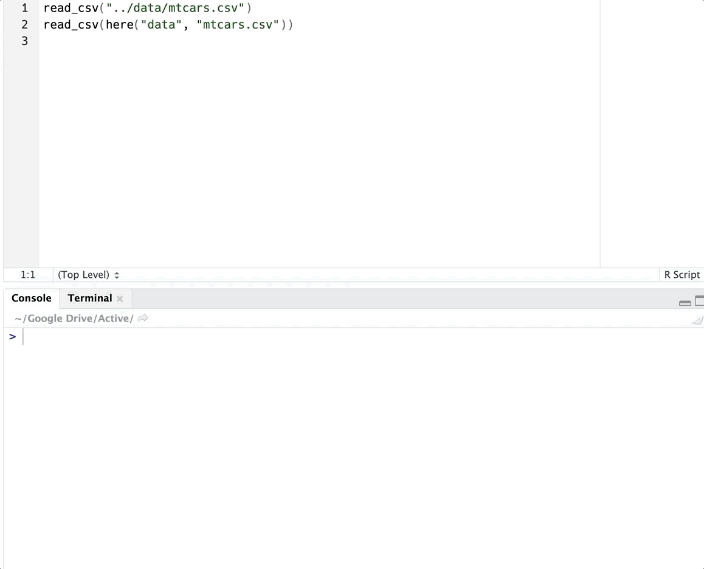

TL;DR: Why should I use here?
The here package bottles up several small best practices for referencing files in your project. You could manufacture most of these yourself using a combination of RStudio projects and clever file paths, but the here package is useful because it streamlines these practices without you needing to think about it. The main benefits:
- here works from the project up. That makes it easy to reference other sub-folders in your directory.
- It’s robust to other ways people open and run your code. Opening your files outside of your project file will still work as intended.
- Like its base R cousin,
file.path(), here() writes paths safely across operating systems.
A Song of Fire and Workflows
When I got started with R, I learned to put setwd() and rm(list = ls()) at the beginning of scripts. It made sense to me, too. It seemed like it got rid of any leftovers in the environment and set up the working directory so I could use relative paths. That’s got to be a good practice, right? The idea definitely is, but setwd() and rm(list = ls()) are problematic. rm() doesn’t give you a clean R session; it won’t, for instance, detach packages. setwd(), meanwhile, is completely dependent on the way you organize your files. By and large, the absolute path that you set on your computer won’t work on mine because it’s doubtful we have the same directory names. I’d need to change the setwd() path in your script to match where I have the file on my computer.
Last year, Jenny Bryan gave a talk on on setting up your R session for a better workflow. A couple of slides in particular set off a bit of controversy:
If the first line of your R script is
setwd("C:\Users\jenny\path\that\only\I\have")
I will come into your office and SET YOUR COMPUTER ON FIRE 🔥.
If the first line of your R script is
rm(list = ls())
I will come into your office and SET YOUR COMPUTER ON FIRE 🔥.
If you haven’t read her write-up on what the issues with using setwd() and rm() are and solutions using a project-oriented workflow, you should. Here’s the basic idea:
- Use RStudio projects. They set up a local working directory in a fresh R session, which makes it much easier for someone else to open and run your code. (Setting up a project is easy.)
- Use
here() from the here package to write file paths
Projects can handle both of the problems setwd() and rm(list = ls()) are trying to solve for you. The need for setwd() is automatically eliminated by using projects because the the default directory will be wherever the project is located. For the latter problem, set the project to open a fresh R session when starting a project. You can do so in your local project options or globally in your RStudio options. Always starting a fresh session eliminates the need for rm(list = ls()) and, in fact, does a better job of clearing your environment.
So, it may not be obvious: what’s the benefit of using the here package if projects solve both these problems?

I have a project. Why not just use relative paths?
One reason to avoid writing paths yourself is that the rules aren’t necessarily the same between operating systems. You could, of course, use file.path() from base R, which safely creates a relative path for you.
file.path("figure", "figure.png")
## [1] "figure/figure.png"
But here has some added benefits: it operates from the project up, making it easier to reference other folders, and it makes your code more robust outside of projects. As an example, I’ve set up an R project on my GitHub that has a file directory like this:
here_here
|--data
|--mtcars.csv
|--figs
|--mpg_hp.png
|--rmd
|--01_read_data.Rmd
|--01_read_data.pdf
|--scripts
|--read_data.R
|--here_here.Rproj
I have an R Markdown file in the rmd folder called 01_read_data.Rmd. In this file, I try to call my data using a relative path from the root directory. But this code fails. R Markdown renders with the working directory set to whatever directory the file is in, but the data folder is a level up.
library(tidyverse)
read_csv("data/mtcars.csv")
## Error: 'data/mtcars.csv' does not exist in current working directory
I could solve this by backtracking my file path, e.g. ../data/mtcars.csv. While backtracking solves the problem from the perspective of R Markdown, however, it introduces a new one: this code won’t work if I run it in the console. here() works in both settings by starting from the project directory.
library(here)
read_csv(here("data", "mtcars.csv"))
## # A tibble: 32 x 11
## mpg cyl disp hp drat wt qsec vs am gear carb
## <dbl> <dbl> <dbl> <dbl> <dbl> <dbl> <dbl> <dbl> <dbl> <dbl> <dbl>
## 1 21 6 160 110 3.9 2.62 16.5 0 1 4 4
## 2 21 6 160 110 3.9 2.88 17.0 0 1 4 4
## 3 22.8 4 108 93 3.85 2.32 18.6 1 1 4 1
## 4 21.4 6 258 110 3.08 3.22 19.4 1 0 3 1
## 5 18.7 8 360 175 3.15 3.44 17.0 0 0 3 2
## 6 18.1 6 225 105 2.76 3.46 20.2 1 0 3 1
## 7 14.3 8 360 245 3.21 3.57 15.8 0 0 3 4
## 8 24.4 4 147. 62 3.69 3.19 20 1 0 4 2
## 9 22.8 4 141. 95 3.92 3.15 22.9 1 0 4 2
## 10 19.2 6 168. 123 3.92 3.44 18.3 1 0 4 4
## # … with 22 more rows
Now, my data reads in with no trouble, and it works just as well running in the console as it does in a code chunk. Likewise, saving output to other folders is easy. I have a figs folder in my directory, and I want to save a ggplot there.
ggplot(mtcars, aes(mpg, hp)) + geom_point()

ggsave(here("figs", "mpg_hp.png"))
Even though I’m calling this code from the rmd folder (where I saved my report), here has no trouble finding the figs folder because it searches from the project up. This code will work even if I move the R Markdown file somewhere else.
|--figs
|--mpg_hp.png
Another benefit is that these files will still run if I open them outside of an RStudio project. For R Markdown files, using a relative path may be okay because it sets a local working directory when running, but .R files don’t. If you open scripts/read_data.R in a different RStudio session, for instance, the relative path fails, but here() still works fine. That’s because it knows where the right directory is thanks to the .Rproj file.

Likewise, if you or someone else set a working directory within your project, here will still work correctly because project directories take precedence. (If you need to set the project root explicitly, use set_here().)
What’s under here?
Those are the main benefits of using here: small best practices that streamline your file organization. So what’s here actually doing to make that happen? The here package is a wrapper for the rprojroot package. rprojroot is a powerful tool for working with project directories, but here offers a more straightforward set of functions that take care of its primary purpose: detecting the root directory and working with paths within it in a platform-independent way.
Running here() will tell you your project root directory, which will look something like this.
here()
## here() starts at /Users/malcolmbarrett/folders/to/directory/
## [1] "/Users/malcolmbarrett/folders/to/directory/"
Essentially, here() is looking around for a few things that signify a root directory, like a .Rproj project file. here also has a function, set_here(), that will tag a directory as root using a .here file, even if it’s not a project. In fact, .here files take priority, followed by .Rproj files, then several other file formats. The last resort is the working directory. If you’re not sure why here is picking a root directory, you can ask it to explain itself using dr_here()
dr_here()
## here() starts at /Users/malcolmbarrett/folders/to/directory/, because it contains a file matching `[.]Rproj$` with contents matching `^Version: ` in the first line
here() also works a lot like file.path() in that it will create a platform-independent path for you (e.g., it will work on Windows and Mac alike). On my Mac, it looks something like this:
here("figure", "figure.png")
## [1] "/Users/malcolmbarrett/folders/to/directory/figure/figure.png"
The main difference is that, while file.path() also gives a cross-platform path, it only pieces together what you give it. That’s very useful, of course, so it may be practical to combine the tools, depending on the needs of your project.
file.path("figure", "figure.png")
## [1] "figure/figure.png"
More than a path paster
here is one of the many tools in our toolkit for addressing reproducibility. It’s designed to work with RStudio projects from the root directory up, making it convenient to organize both your files and your file paths. here is also robust to other ways people run your code. If that doesn’t convince you, you can at least sleep soundly knowing that your computer will live another day.